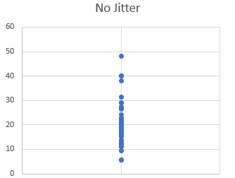
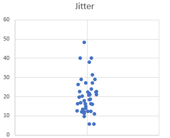
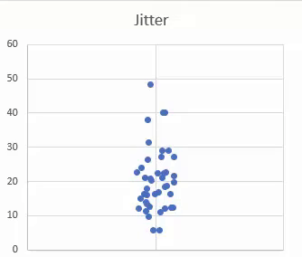

تورنادو و تسکهای periodic
مقدمه
یکی از ویژگیهای بسیار جذاب تورنادو توانایی آن در اجرای تسکهای پریودیک است. ابزارهای دیگری نیز برای این دسته از تسکها وجود دارند که شاید معروفترین آنها Celery Beat و Crond باشد اما تورنادو این کار را بدون هیچگونه پیشنیازی و به سادگی و تنها با فراخوانی یک متد انجام میدهد.
امضای متد
متد مورد نظر برای اجرای تسکهای پریودیک PeriodicCallback نام دارد آن را میتوان از مسیر tornado.ioloop.PeriodicCallback ایمپورت کرد. این متد سه آرگومان میگیرد اولی تابعی است که قرار است اجرا شود «کالبک مورد نظر ما» دومی فاصله زمانی بین اجرای متوالی کالبک است«همان interval یا callback time» سومی هم پارامتری است به نام jitter
یک مثال
میخواهیم یک تابع داشته باشیم که در فواصل زمانی معین یک پیام را به خروجی میبرد.
import asyncio
from tornado.ioloop import PeriodicCallback
def say_hello():
print("Hello Tornado")
callback = PeriodicCallback(say_hello, 3000)
callback.start()
loop = asyncio.get_event_loop()
loop.run_forever()
تابع say_hello هر سه ثانیه یکبار به صورت پریودیک اجرا میشود. اکثر زمانها در تورنادو به صورت ثانیه وارد میشود اما در این مورد یک استثنا وجود دارد. پارامتر callback_time در PeriodicCallback باید به صورت میلیثانیه یا شیای از datetime.timedelta وارد شود.
import asyncio
from datetime import timedelta
from tornado.ioloop import PeriodicCallback
def say_hello():
print("Hello Tornado")
callback = PeriodicCallback(say_hello, timedelta(seconds=3))
callback.start()
loop = asyncio.get_event_loop()
loop.run_forever()
فراخوانی کالبک با آرگومان
بعضی از توابع برای اجرا نیازمند آرگومانهایی هستند و به دو روش میتوان آرگومانهایی را به کالبک مورد نظر فرستاد
1- استفاده از lambda
import asyncio
from tornado.ioloop import PeriodicCallback
def say_hello(name):
print(f"Hello {name}")
callback = PeriodicCallback(lambda: say_hello("Reganto"), 3000)
callback.start()
loop = asyncio.get_event_loop()
loop.run_forever()
2- استفاده از partial
import asyncio
from functools import partial
from tornado.ioloop import PeriodicCallback
def say_hello(name):
print(f"Hello {name}")
callback = PeriodicCallback(partial(say_hello, name="Reganto"), 3000)
callback.start()
loop = asyncio.get_event_loop()
loop.run_forever()
یک مثال ملموستر
سناریویی را در نظر بگیرید که در یک سیستم تعدادی کاربر داشته باشیم. کاربران مورد نظر ما برای دریافت سرویسی ماهانه مبلغی را پرداخت میکنند در اینصورت تسکی باید به صورت ماهیانه اجرا شود. این تسک میبایست کاربرانی را که برای سرویس مورد نظر پرداختی نداشتهاند پیدا کرده و دسترسی آنها را به سرویس مسدود کند و درنهایت ایمیلی با متن مناسب برای کاربرانی که اکانت خود را شارژ نکردهاند بفرستد.
این تسک را میتوان به سه زیرتسک «سه تابع» تقسیم کرد:
1- پیدا کردن کاربرانی که پرداختی نداشتهاند
2- مسدود کردن دسترسی کاربرانی که پرداختی نداشتهاند
3- ارسال ایمیل به کاربران مسدودشده و درخواست برای شارژ اکانت
import asyncio
from datetime import timedelta
from tornado.ioloop import PeriodicCallback
def scan_for_expired_users():
expired_users = ["Finrod", "Boromir", "Theoden"]
return expired_users
def deactivating_process(user):
print(f"Deactivating account: {user}")
def send_expiration_email(user):
print(f"Sending expiration email to: {user}")
def arda_task():
expired_users = scan_for_expired_users()
for user in expired_users:
deactivating_process(user)
send_expiration_email(user)
task = PeriodicCallback(arda_task, timedelta(days=30))
task.start()
loop = asyncio.get_event_loop()
loop.run_forever()
دربارهی jitter
جیتر یک مفهوم ریاضی است و برای کاهش alignment رویدادهای با پریود مشابه استفاده میشود.
بدون جیتر

با جیتر

اجرا با مقادیر متفاوت جیتر

اگر مقدار جیتر را 0.1 قرار دهیم، باعث به وجود آمدن تنوع 10 درصدی در فاصله زمانی فراخوانی کالبک خواهد شد.
در آخر
1- اگر اجرای کالبک بیشتر از callback_time طول بکشد، از فراخوانیهای بعدی چشمپوشی میشود.«اضافه شده در تونادو 6.2»
2- چنانچه برای alignment معادلی مناسب یافتید، دریغ نکنید. tell.regnato[at]gmail.com
3- برای نکات جزییتر میتوانید مستندات تورنادو برای PeriodicCallback را چک کنید.
4- مثالی از اجرای همین تسک با Celery Beat را میتوانید اینجا بیابید.
5- عکسهای مربوط به جیتر از اینجا گرفته شدهاند.